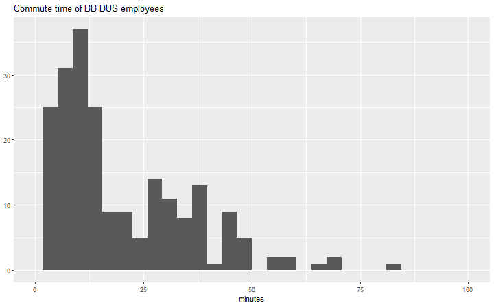
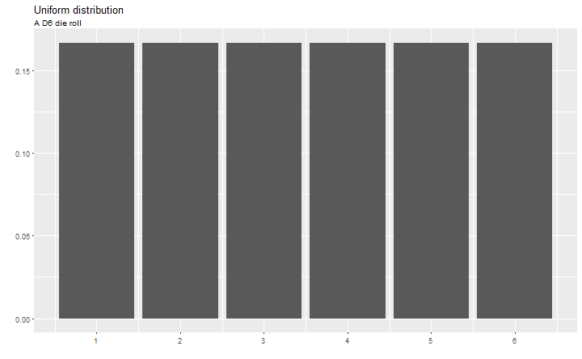
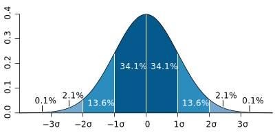

titlepage
Statistics
The practice or science of collecting and analysing numerical data in large quantities, especially for the purpose of inferring proportions in a whole from those in a representative sample.
OED definition
Statistics is the study of the collection, analysis, interpretation, presentation, and organization of data.
The Oxford Dictionary of Statistical Terms
Randomness
The quality or state of lacking a pattern or principle of organization; unpredictability
OED definition
History
- world's first statistics department at University College London in 1911
- born in WW2: S-Branch
- RNG back then: lottery balls, and women picking at "random"
From Histograms to Distributions
Graphs and Functions
Punktdiagramm zum Einstieg: Spielerlevel x, anzahl Gold y
Histograms

Density estimates

Probability Density Function
A function of a discrete variable whose integral over any interval is the probability that the variate specified by it will lie within that interval.
OED dictionary
Density Functions and Distributions
Uniform distribution

Beispielrechnung mit konkreten Zahlen: D6
Poisson (Count) distribution

Normal (Gaussian) distribution

explain distributions
- most (nice) distributions can be explained by moments
- mean (average): \(\mu = E[X]\)
- standard deviation/variance: \(\sigma = \sqrt{E[(X-\mu)^2]}\)
- \(\sigma = \sqrt{E[X^2] - (E[X])^2}\)
- for the Normal distribution: \[X \sim \mathcal{N}(\mu,\sigma^2)\]
(Statistical) Mean
- the expected value
- arithmetic mean: \(1/n \sum x_i\)
Standard Deviation

Median
- the 50% observation
- more resistant to outliers than the mean
- example: D10 roll \(X = {1, 1, 1, 1, 10}\)
- mean: 2.8
- median: 1
knitr::kable(sspy %>% filter(Price != "Free" & Owners.est > 5000) %>% select(Game, Owners.est, playtime_avg_h, playtime_med_h) %>% arrange(-playtime_avg_h) %>% head(n=5))
knitr::kable(sspy %>% filter(Price != "Free" & Owners.est > 5000) %>% select(Game, Owners.est, playtime_avg_h, playtime_med_h) %>% arrange(-playtime_med_h) %>% head(n=5))
Others
- quartiles
summary
- mean, variance, median, lognormal (tail distributions in games)
- the density curve is always preferable to a moment!
Bonus: Anscombe's Quartet
- Anscombe, Francis J. (1973) Graphs in statistical analysis. American Statistician, 27, pp. 17–21.
- four \(x, y\) datasets which have equal properties:
- mean (9, 7.5), variance (11, 4.12), correlation (0.816)
- linear regression: \(y = 4 + 0.346x\)
- showcase for data exploration!

Bonus bonus: The Datasaurus
https://www.autodeskresearch.com/publications/samestats https://github.com/stephlocke/datasauRus
Correlation vs Causation
(Statistics) A quantity measuring the extent of the interdependence of variable quantities.
OED definitionThe action of causing something.
OED definition


Bayes' Rule
- asdf
Bayes' Rule
\[p(A|B) = \frac{p(B|A)*p(A)}{p(B)}\]
Linear Regression
\[y_i = \beta_0 + \beta_i + \varepsilon_i\]
- fitted values: \[\hat y = b_0 + b_ix_i\]
- residuals: \[e_i = y_i - \hat y_i\]
- statistical difference/significance
- show how two data dots come from the same distribution and can be different
- t-test
- representative Stichprobe, zB hohe level, wenig Spieler, Ausreisser/Verzerrung
common mistakes
- filtern nach sample
- filter bias
- samples have too few players
- outliers (also: cheats)
- avg vs mean (steamspy)
- distributions are important(!)
- correlation is not causation
- summing of data over variables (levels)
- lower levels have more players, so sums are much(!) larger
- self-selection
- check validity of data
- check for cheats